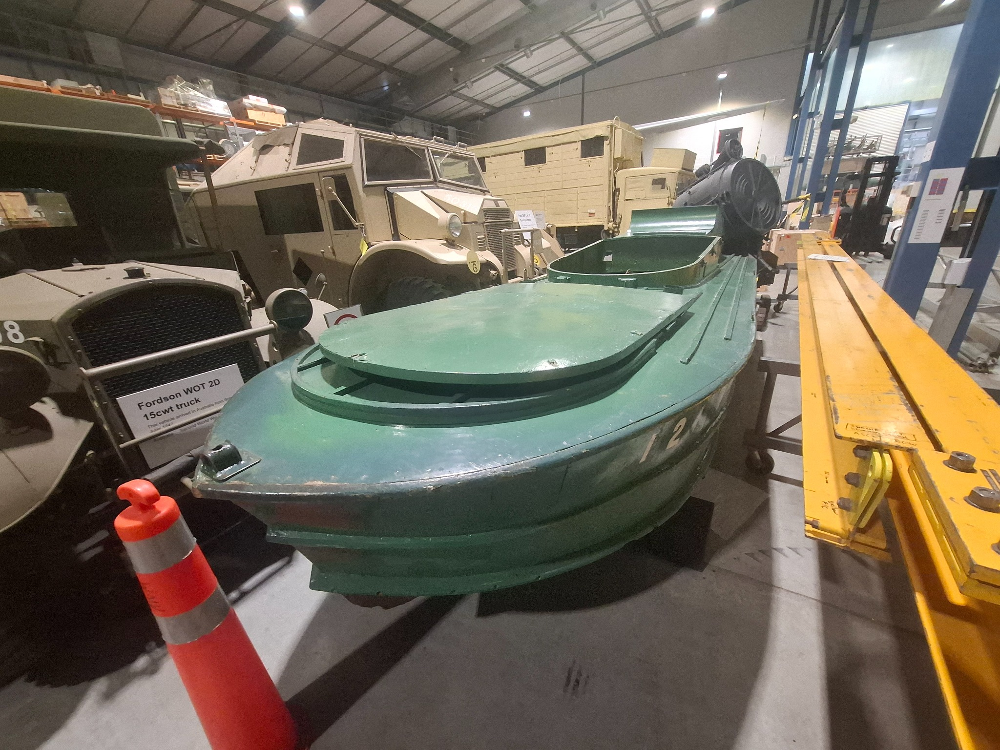
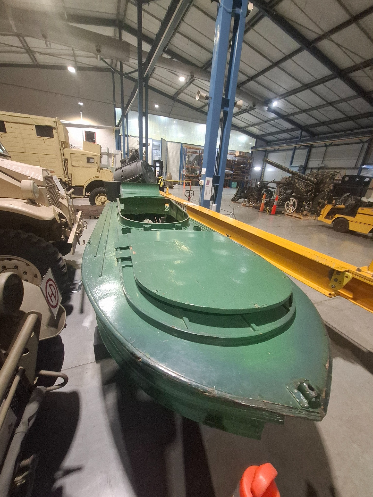
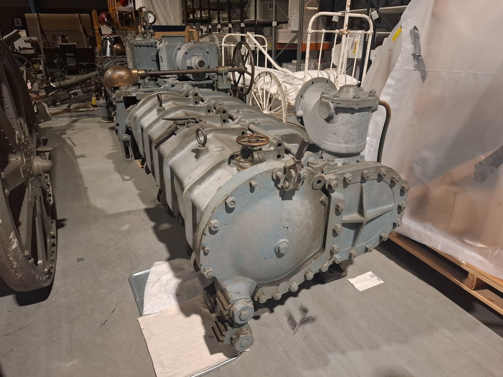
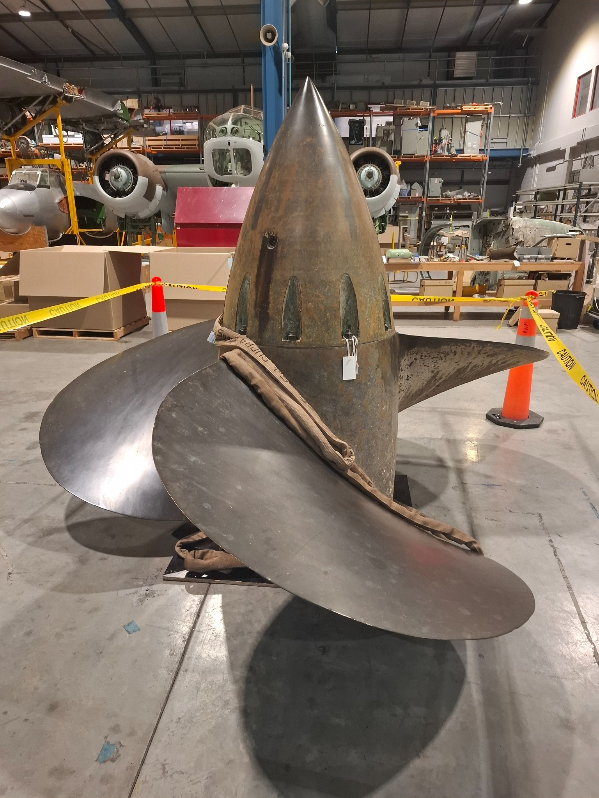
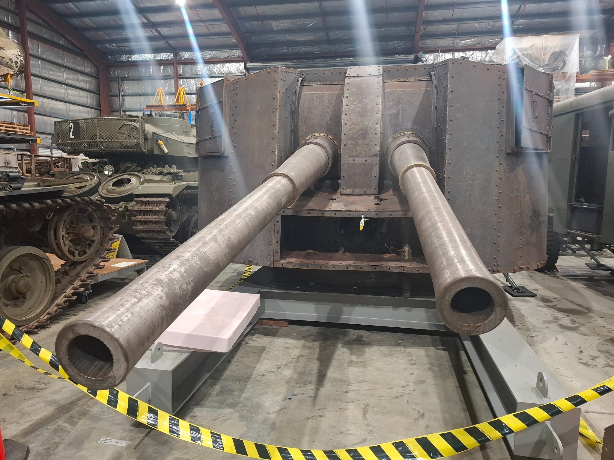
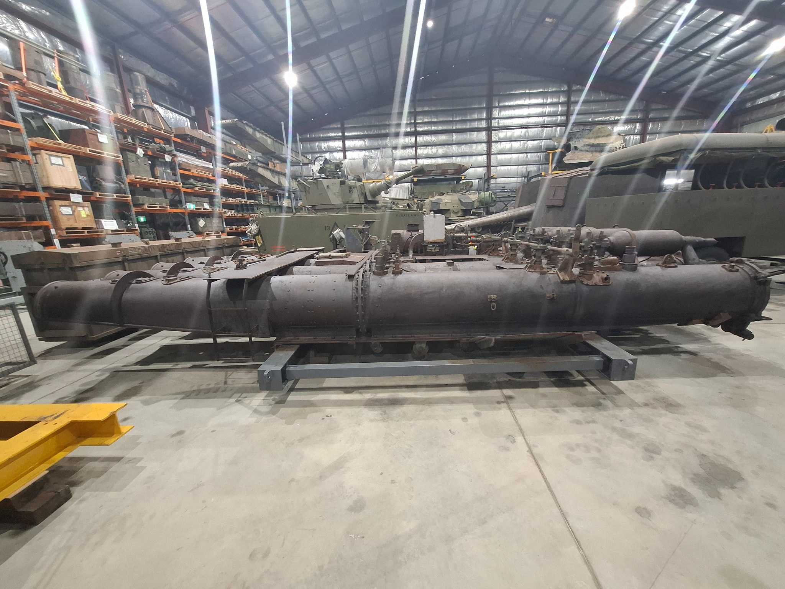
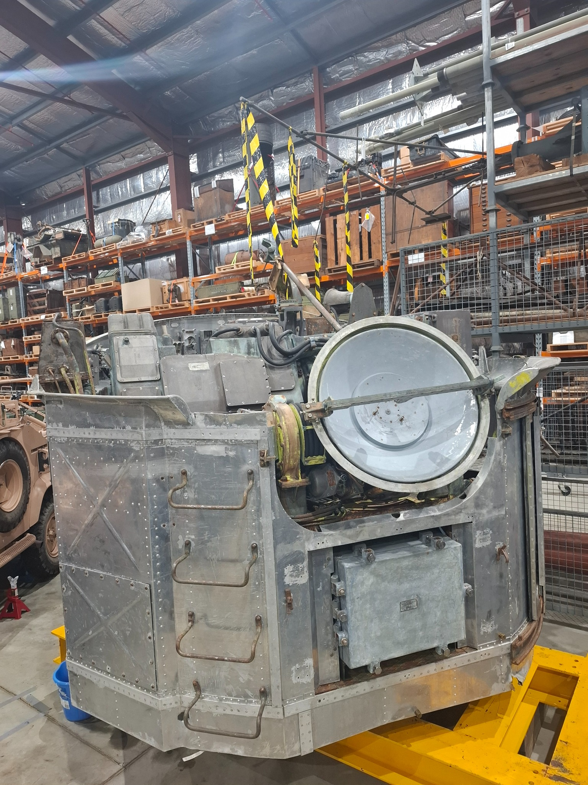

Australian War Memorial - Treloar Centre
| Location | 6-10 Callan Street, Mitchell, ACT, Australia |
|---|---|
| Visited | 21 September 2026 |
| Website | Home | Australian War Memorial |

Museum Report
Given my addiction to travelling the world looking for preserved warships, I was stunned last week to discover that there was one in my own backyard that I had never heard of.
So yesterday I drove down to Canberra to visit the Australian War Memorial Treloar Centre. This is a large warehouse facility that provides secure storage for exhibits held by the War Memorial that aren’t currently on display.
I try to avoid hyperbole in my reports, but walking into the centre is a truly jaw-dropping experience. The section I visited consisted of two very large warehouses filled to the brim with all manner of tanks, guns, aircraft, vehicles, and other large exhibits. As this is a storage facility, and not a display facility, it was not always possible to get clear photographs of the items in the collection.
The object of my visit was a Japanese Shinyo dating from World War Two - a speed boat filled with explosive charges that would be driven towards an enemy vessel and detonated.
Construction of these boats - designed to be one-man suicide craft armed with 300 kg charges of TNT - began in 1943. By the end of the war about 6,000 had been produced, most built of wood but a few from steel.
This launch was captured by the crew of the Bathurst class corvette HMAS Deloraine at Sandakan Harbour, British North Borneo, during its occupation by Australian Naval and Military Forces in October 1945. The sailors from Deloraine used this launch recreationally as a ski boat on Sandakan Harbour. The launch returned to Australia with Deloraine in late 1945 and was later presented to the Australian War Memorial.

Other significant naval exhibits in the centre include the submerged torpedo tubes and propeller from the battle cruiser HMAS Australia [I]. This is the first time I have seen submerged tubes from a First World War capital ship, and I was surprised how large they were - it underlines how they would have resulted in such large compartments that became buoyancy and stability hazards when flooded. Curiously the propeller was engraved with the name HMS Australia rather than HMAS Australia!


They also had a twin 4.7-inch mounting, quadruple 21-inch torpedo tube launcher, and fire control director from the Tribal class destroyer HMAS Arunta [I]. These had had all of the paint removed because it presented an asbestos hazard, however this isn’t an issue as they are being stored in a controlled climate.



Another artefact they had was the 5-inch barrel from the frigate HMAS ANZAC [III] which was involved in the bombardment of the Al Faw peninsula during the First Gulf War.
The Treloar Centre is in the suburb of Mitchell in North Canberra - several kilometres away from the main Australian War Memorial museum. It is not open to the public, but it was possible to arrange a viewing by contacting the memorial in advance.